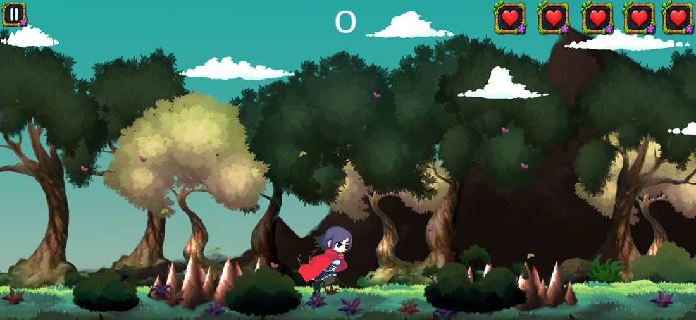
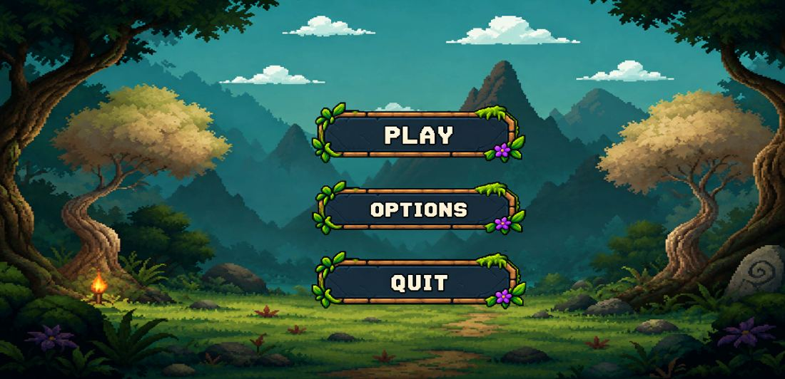
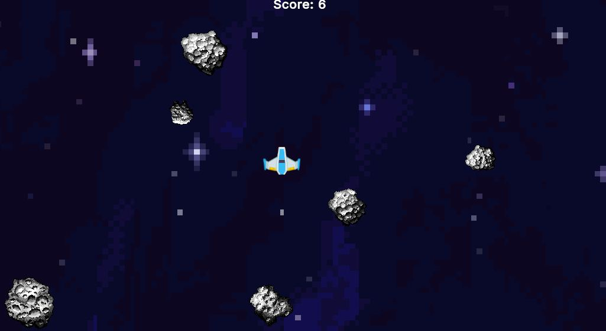
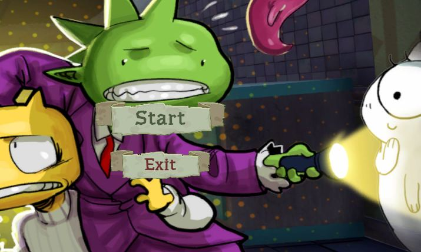
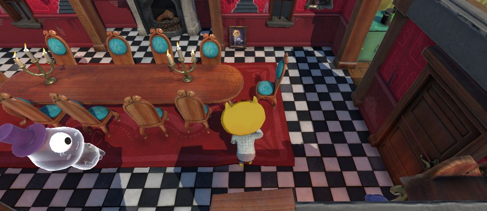
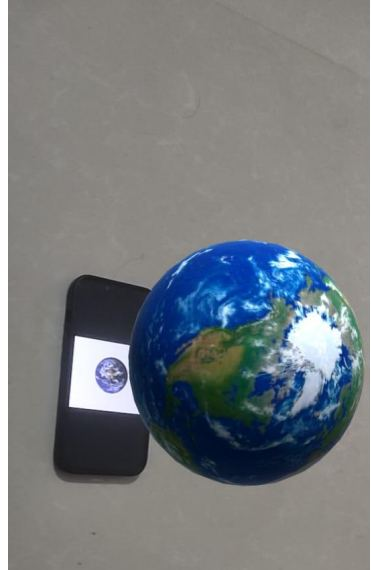
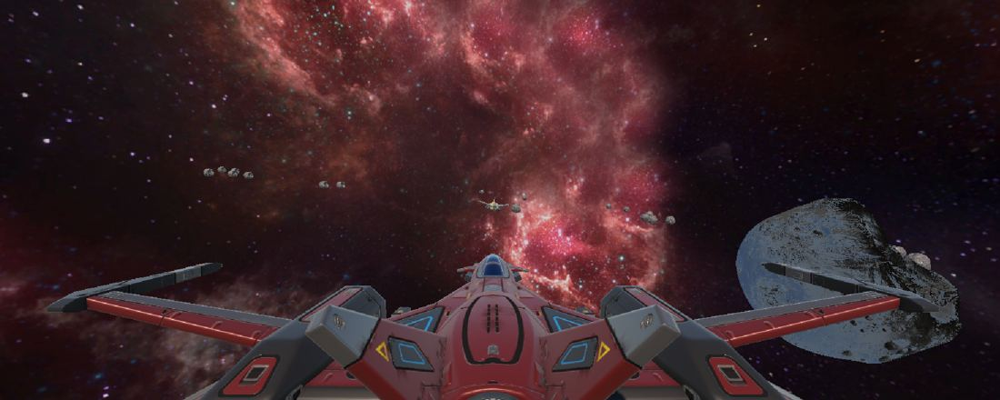

🏃
Endless Runner
2D platformer with automatic running, jumping, obstacle avoidance, reusable ground platforms through object pooling, and restart mechanics.
Play Game ↗View screenshots


I'm a BCA student and aspiring Unity Game Developer. I build 2D and 3D games with C#, focusing on gameplay systems, movement, collision detection and interactive experiences.
A selection of games and interactive experiences I've developed.
2D platformer with automatic running, jumping, obstacle avoidance, reusable ground platforms through object pooling, and restart mechanics.
Play Game ↗

Pixel-art 2D spaceship survival game featuring asteroid avoidance, spaceship movement and collision-based survival mechanics.
Play Game ↗
Third-person haunted mansion adventure: avoid ghosts, navigate the environment and survive to reach the finish point.
Play Game ↗

Augmented reality experience that uses image tracking to display a virtual 3D Earth model through the camera.
View on itch.io ↗
In progress: 3D space combat game with spaceship movement, mouse-controlled rotation, shooting, collision detection and enemy tracking AI.
● Currently in development
Tools and technologies I use to create interactive projects.
Professional experience, industry projects, and verified credentials.
Kochi, Kerala · Game development internship
Industry project: AR for Interactive Smart Education
Verify TCS Certificate ↗IBM digital badge
View IBM Badge ↗I'm pursuing a Bachelor of Computer Applications at Yenepoya University, Bengaluru (2023–present). I enjoy creating games, playing games, exploring game mechanics and sports.
I'm continually exploring new tools and techniques to grow as a developer.
I'm open to opportunities, collaborations, and conversations about game development.
Kannur, Kerala, India · +91 6282451574 · harigovindknns@gmail.com